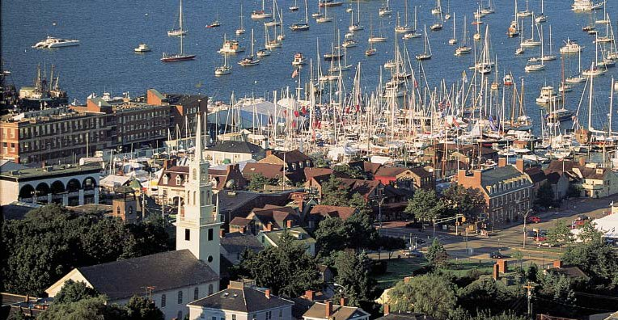
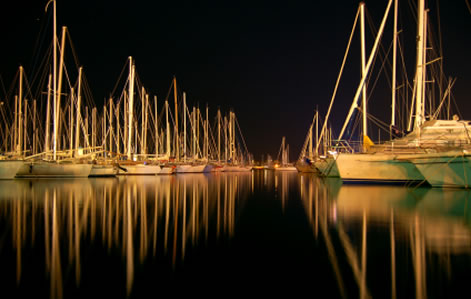
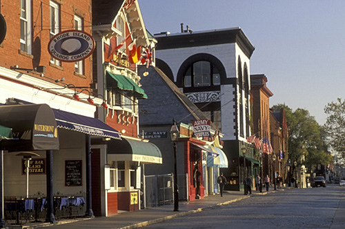

Attendees: Banquet Information

The SIGMOD/PODS Banquet will be held Wednesday July 1st at the Newport Yachting Center in historic Newport Rhode Island.
Pickup for the banquet will be from 17:30 to 18:00 at the Westin Streetside.
| Attendees will enjoy a seaside New England Lobster Boil (non-seafood and vegetarian options are available) at the Newport Yachting Center, located in the heart of downtown Newport. The picturesque location offers an unparalleled waterfront experience with breathtaking views of historic Newport Harbor, dotted with sailboats and the iconic Newport Bridge. The Yachting Center’s location is steps from Newport’s famed cobblestone streets, lined with quaint shops, restaurants and galleries. |  |

Tour Option I: Harbor Cruise
Sit back and enjoy the
beautiful sights of Newport Harbor and Narragansett Bay aboard the
luxurious Vista Jubilee, Newport's premier luxury yacht for
charter. A professional tour guide will point out the spectacular
sights during your one hour tour. The ship’s full service beverage and
snack bar is always available throughout the cruise. The first class
amenities of the Vista Jubilee combined with the unsurpassed beauty of
Rhode Island's Newport Harbor & Narragansett Bay make for an
unforgettable experience on the bay.

Tour Option II: Scenic Narrated Tour of
Newport
A visit to Newport would not be complete without a tour of the
area. The narrated tour will include the colonial section, with its
many authentic historical buildings and restored homes...the world
famous Ten Mile Ocean Drive, renowned for the rugged beauty of its
spectacular coastline...and Bellevue Avenue, the most magnificent
collection of homes in the country, where the millionaires built their
fabulous ʺsummer cottagesʺ.
A Brief History of Newport
Newport was founded less than 20 years after the Mayflower landed
in Plymouth, MA. Rhode Island was the only colony with religious
freedom – founded by Roger Williams, so many people including those
from the Massachusetts Bay settlement came to Newport. By the 1700’s
there was about 10,000 people in Newport and it was rated one of the
five richest cities in America along with Boston, New York City,
Philadelphia, and Charleston, its sister city.
In 1775, during the War for
independence, 10,000 British troops came to the town of Newport and
stayed for about 2 ½ years. Because of the very cold winters, there was
a strong need for firewood; the British troops used half the colonial
homes in Newport for firewood. Eventually they left due to the cold
winter. Many of the colonial homes that were left standing are still
here today and marked with a plaque with the year it was built.
Sometime afterwards, the French soldiers brought 8,000 troops to
Newport and stayed only for 1 year. Even today the taverns and
headquarters that they frequented are still standing.
Newport then became a quiet
fishing village for about 100 years. So, when the big factories and
textiles came to Providence and other areas in Rhode Island, Newport
remained unspoiled. The city then was found by the NY millionaires to
get out of the city and became an area for their elaborate summer
homes. Hundreds of millionaires came to Newport via steamships. This
time became known as the “Gilded Age,” which continued until WWI.
During this time, palaces were built on Bellevue Avenue to house the
rich, including the Vanderbilts & Astors, for two-to‐six weeks out
of the summer. Newport became the Queen of resorts. Newport’s “Gilded
Age” lasted a generation and a half due to the instatement of taxes in
1913, the Stock market crash in 1920, the invention of the automobile,
air conditioning and eventually, airplanes, which could fly the rich to
tropical destinations.
From the 1940’s to the1960’s
the “palaces” were vacant and some turned into schools. Most palaces
became vacant again and after the Navy left Newport, the town was left
very rundown. Finally, in the 1960’s and 70’s Newport had a huge
recovery, including the building of the Pell Bridge (better known as
the Newport Bridge) built in 1969.
Today Newport is a haven for tourists from all over the world. Newport now has 25,000 residents with a flow of about 4.5 million visitors per year. Now a contemporary city with a rich heritage, Newport has something for almost everyone ‐ from mansion tours, to tennis history, lovely beaches, sailing, the world‐famous ʺCliff Walkʺ, interesting shops and restaurants, museums, and art and jazz festivals.